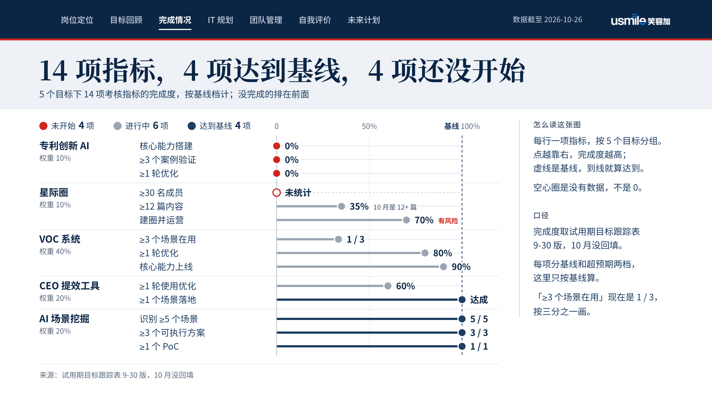
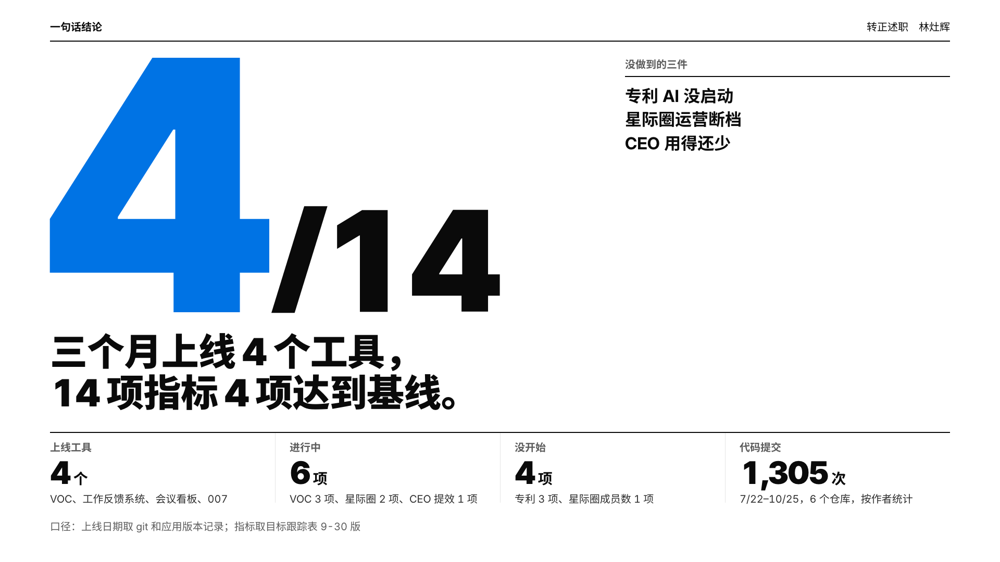
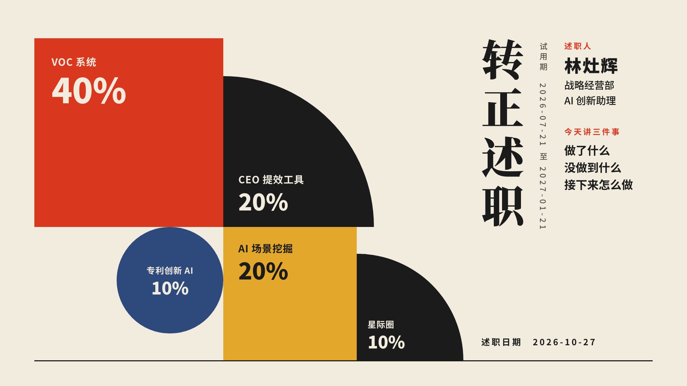

转正述职：三种 PPT 与三种网页
内容都来自述职报告 rev 140，数据截至 2026-10-26。PPT 每版 29 页：和 PPT 规划同序，VOC 两张截图各占一页，所以多了一页「竞品对比」（第 9b 页）。
PPT（三种风格）
点「放映」打开 HTML 版：方向键翻页，Esc 回概览。现场投屏建议用 PDF，字体已经嵌进文件，断网也不变样。


网页（三种类型）
都是单文件，图片已内嵌，可以直接发给 CEO 会后自己看；电脑和手机都能看。